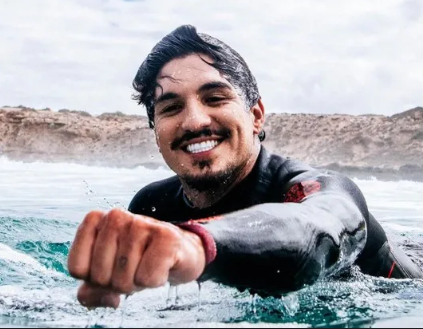
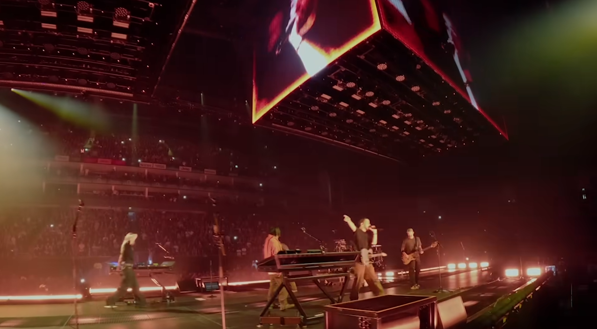
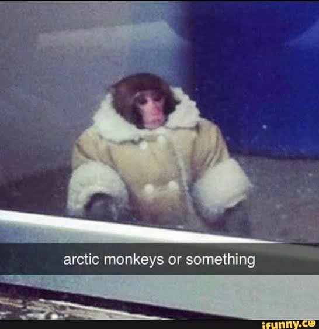
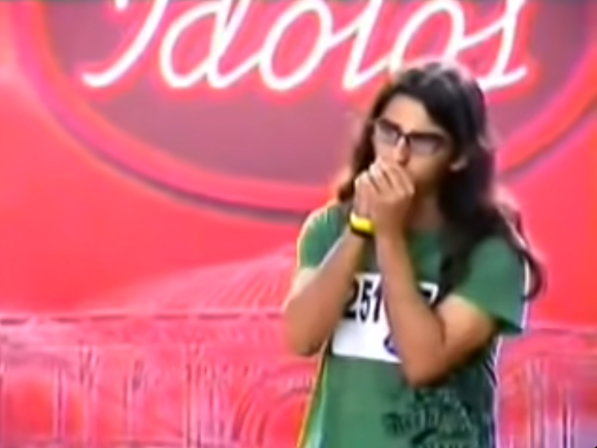
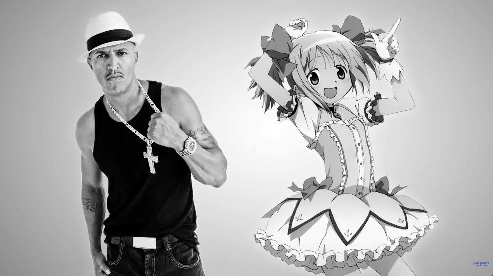
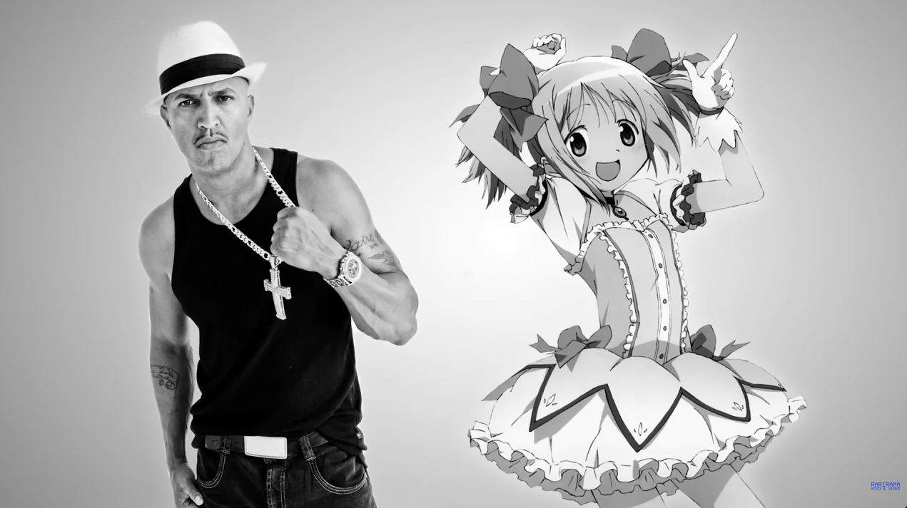

você humilha GABRIEL MEDINA e ele te cumprimenta
Mesmo ganhando, você sente que não é feliz surfando. Então Gabriel Medina revela um segredo pra você
Há um grupo querendo parar o show do Linkin Park que acontecerá no Rio de Janeiro na noite do mesmo dia. É revelado que os Artic Monkeys está frustado com o resultado dos seus últimos álbuns porque são horriveis, e perceberam que não fazem mais música como antigamente. Frustrados, eles querem parar o show do Linkin Park. .
UM PERIGO REAL
Chegando no show do Linkin Park, você encontra mais pessoas que descobriram o plano e quer se juntar a você para parar o plano maléfico da banda falida. Essas pessoas incluem o duo Racionais e Madoka Magica, Pérciles e Paramore, e o Davi do "Meu Ursinho". Todos eles estão na frente do portão do show pensando em como deter os Macacos do Ártico. Porém, nesse meio tempo, há uma grande explosão na parte dos bastidores do show, causando uma grande confusão. Vocês decidem entrar e investigar o que tá acontecendo, correndo na direção contrário do público.
O CAOS COME SOLTO
VS
Você chega nos bastidores e está rolando um duelo musical entre Artic Monkeys e Linkin Park para saber qual banda está menos falida. Sabendo que você já ganhou um duelo de guitarras contra Tom Morello, Slash e Tim Hanson, você é capaz de ascender novamente uma das bandas. Qual grupo você escolhe se junta para desbancar a carreira dos concorrentes?
O SHOW PODE CONTINUAR
Ao escolher Linkin Park, você apresenta o solo de guitarra mais emocionante e, os Macacos do Ártico se retiram do local humilhados sentindo o gosto da derrota. Os fãs que foram embora entram novamente no estádio do show e a apresentação ocorre perfeitamente bem. Você salva o dia. Final bom.
O SHOW PODE CONTINUAR
Ao escolher Artic Monkeys, você revoluciona as músicas dos Macacos do Ártico, fazendo o milagre de melhorar as músicas depecionantes dos últimos álbuns. Com isso, sua popularidade aumenta. E o Linkin Park? Depois da derrota, eles voltaram ao hiato novamente, a espera de uma nova oportunidade que talvez nunca chegue. Você entra no show com os macacos e ganham o palco da noite, surpreendendo a audiência e satisfazendo vários fãs. Final Alternativo.
A CRIAÇÃO DA MAIOR BANDA DE ROCK DO MUNDO
 
